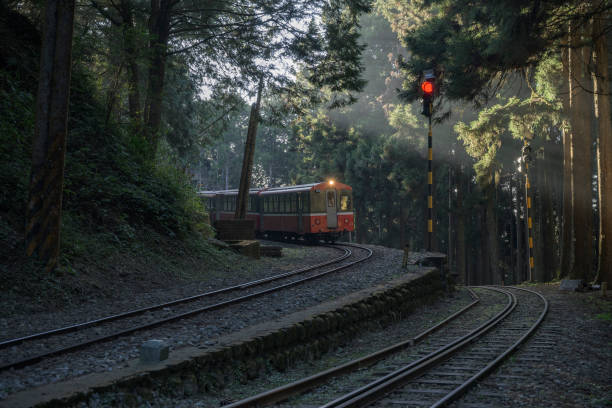
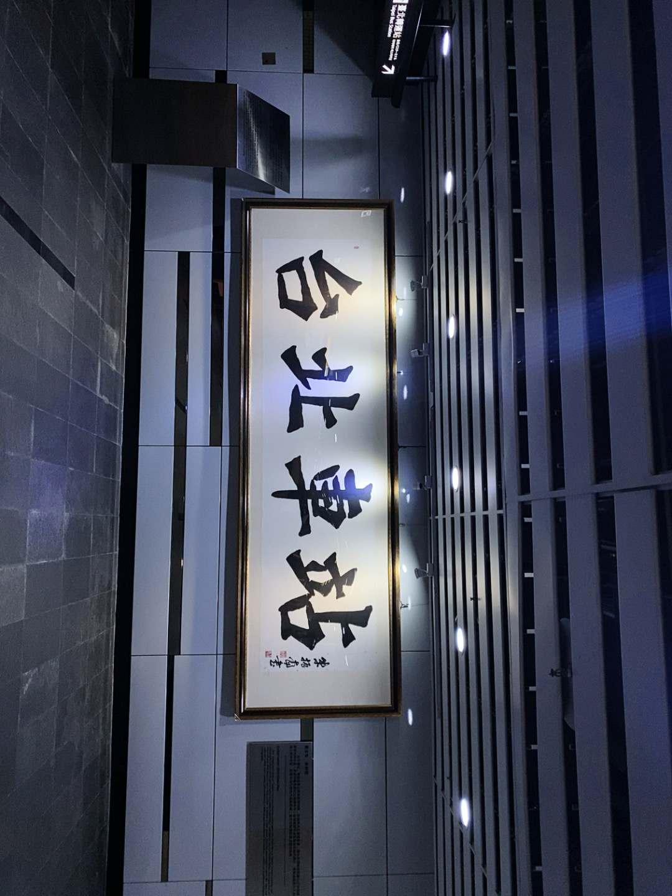
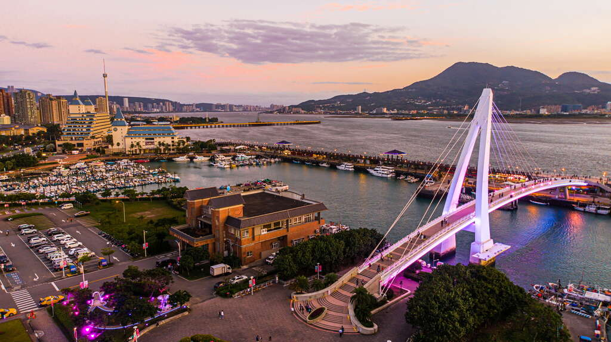
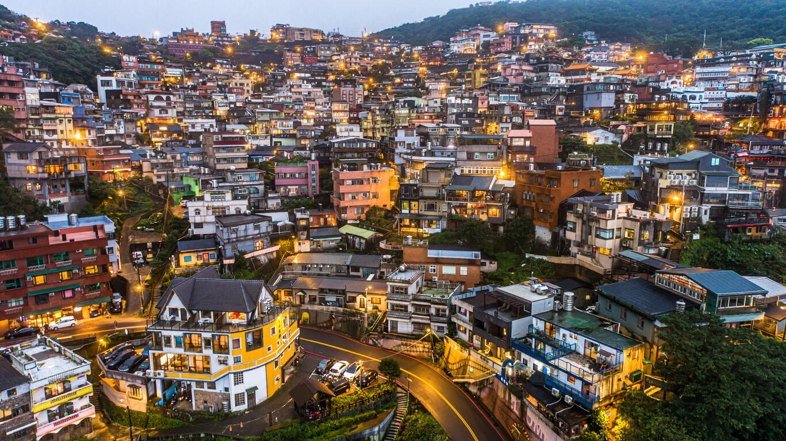
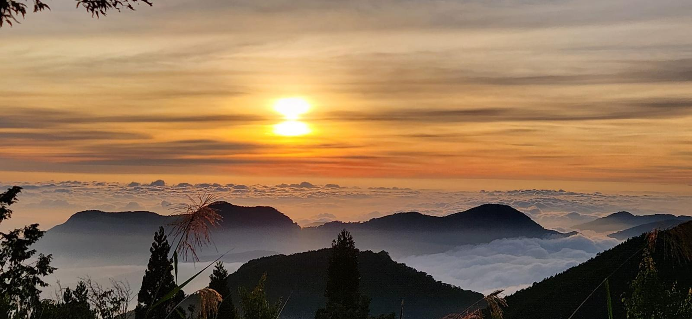

总天数
6 天 5 晚


用 30 秒建立整体印象，再往下拆到每一天。
总天数
6 天 5 晚
路线骨架
城市烟火（台北）→ 淡水 → 博物馆 → 九份 → 自然风光（日月潭） → 阿里山 → 桃园购物返程
适合谁
第一次去台湾、愿意提前订票换现、能接受捷运+公车+高铁混搭的人
亮点关键词
证件、交通、支付与工具（记得提前锁住宿与跨城票！！！）。
务必在官网或正规渠道订好住宿，并锁位跨城/景点交通（如日月潭↔阿里山公车、高铁衔接）。热门日期现场常只剩不理想班次——提前锁位等于买一份淡定。
护照、符合政策的入境与健康申报（若有）、入境单（机上或落地前填好；电子版即可）。政策会变，出发前以航司与官方说明为准——官方通常比小红书更不容易翻车。
机场或 711 可购悠游卡。台北市内刷悠游卡搭捷运很方便；6 天行程参考：充约 7000 台币，回程常还能剩两三百——略多充通常比反复找 ATM 省心。
跨城（如台北→台中再转日月潭）走高铁 + 公车衔接。往日月潭、阿里山等热门段务必提前订票。用地图记末班捷运/公车，避免夜景看完变「城市徒步耐力赛」。
夜市、小吃摊、部分购票点仍偏现金。机场大厅可用带芯片的 Visa 信用卡取现；实测约换7000 台币偏充裕。除机场外，每家 7-11 店内 ATM也可领现（有手续费，依发卡行与机具为准）。建议分散换、分散放。
桃园机场可办「玩几天买几天」的无限流量卡；价格随汇率浮动，约100+ RMB可作心理预算，以柜台为准。多人同行可评估热点需求。
全程以 Google Maps 为主，把每日地点加入已储存清单，并把末班捷运/公车记进备忘录。步行、捷运与公车以地图实时路线为准。
Klook 可提前在线购景点/交通票，节省现场排队；Uber 适合市区不想坐捷运或公车时打车，但价格相较大众交通明显更高。
日月潭↔阿里山公车↔高铁、萤火虫星空团、日出团等设日历提醒。跨城段预留缓冲：人生可以赶，车不等你；船班、公车表以现场公告为准。
点击一天展开详情，与下方「路线一览」节点联动。

电话卡：按天数选无限流量或定量；约 100+ RMB（以柜台为准）。
悠游卡：6 天可参考充 7000 台币，全程 换多不换少。
现金：机场大厅用 带芯片的 Visa 换汇，实测约 7000 台币较充裕；夜市与部分购票点仍偏现金。
入境、领行李后完成办卡换汇，刷悠游卡搭捷运进城。订不到「星空旅舍」时，WORK INN 可作环境还不错的替代。第一天以安顿为主，别把体力条在第一格就刷满。
可先搜「西门町美食」做清单，但保留弹性——排队也是隐形消费（时间）。天天利卤肉饭强烈安利，扎实一餐再逛。若不爱大肠、黏糊面线，阿宗面线排队虽红未必合你口味，可勇敢跳过网红打卡点。
夜爬象山俯瞰 101 夜景：防滑鞋、水、量力；安全比出片更重要。
个人榜 Top1：串烧 + 生啤，愿意二刷；排队久可改时段（排队也要吃！！！）。
机场捷运进城；台北市以捷运为主；去台中/台南等跨城再上高铁剧本。
能刷卡就刷卡，现金留给「只收现金」的摊位；确认网络与现金再冲夜市。

这一晚强推星空旅舍：干净、设施好，旺季务必提早订。订不到时心理预期要准备好「与替代方案互相安慰」。
拍照、看海、吹风；注意防晒与海边的「发型自由」风力。
搜「淡水老街美食」做候选，策略少量多样。阿给、鱼丸等特色可参考评价再下手。
没错又来了：串烧 + 生啤，专一也是一种旅行美德（我也是Dog.jpg）。
捷运 + 有轨电车 + 公车（渔人码头与淡水老街间留意接驳）。务必盯Google Map公车时间和等车地点，别让「夜景很美」变成「回程很悬」。
假日人潮多；日落前后和海景码头都很适合拍照。

第二晚续住，行李不搬，幸福感 +10086（人均250+rmb，越早订越便宜）。
预留整块时间看展；可租在线语音导览，听懂展品背后故事，比纯打卡更像「门票买到了知识」。展场冷气足，穿舒适鞋。
小吃、挂件、冰箱贴、阿里山金萱茶叶等伴手礼建议集中一段买齐，少拎重物爬坡。台阶多、假日挤，大行李箱越拖越后悔。
旅舍附近麦当劳：保底选项，口味一般但不丢人。也可自行选择美食（看个人喜好）。
捷运转公车到故宫与九份；用地图锁定具体站名与线路编号。公车时间都不短，晚上回九份务必盯末班车!，避免剧情变「高价计程车谈判」。
国立博物馆可买一些小文物纪念品作伴手礼，送给家人朋友的不二选择。
九份雨天路滑，注意安全。
九份不适合拖大箱，背个小包即可。
小礼品也是在九份买的，请自行选择（看个人喜好）。
携程可订南投日月潭湖悦景观旅店。湖景吃天气：晴天像明信片，阴天像忘了付费的滤镜——心态放平，湖还是那片湖。
捷运 → 台北高铁站 → 台中高铁站，站口买好往日月潭公车票与日月潭船票（班次、月台、是否划位一次问清）。捷运 → 公车到游客中心 → 船到旅店，每段预留缓冲：人生可以赶，车不等你。
游船跳岛、单车或公车环湖、缆车等；建议先安排易受天气影响的项目。
特色民族烤肉、鸡翅包饭、阿婆茶叶蛋、牛肉面等，体验型一餐；油腻与份量自控，别把胃当无限背包。
高铁 + 公车 + 船运串联；公车耗时、船班会变，以现场公告与地图为准。
防晒补水；晕船者提前准备；盯紧船班与公车表，它们是防翻车护栏。
日月潭的景点很多，可以慢慢逛，感受湖光山色。
如果你想从日月潭到阿里山的公车票，需要提前在网上预定付款！，保存二维码。
携程 / 小红书挑口碑店；山区重点：保暖、接驳、早餐、隔音。睡得好，隔日看日出才像「被风景叫醒」。
务必提前买票：日月潭到阿里山热门段，没提前订可能不让上车——硬规则型剧情杀，别赌运气。
阿里山火车上山，徒步逛森林与神木；海拔温差大，外套不是时尚单品，是生存装备。
旅舍前台报团：问清集合点、时间、退费。拍星空避免强光扫别人镜头——你的朋友圈很亮，别人的快门会哭。
葱爆山猪肉：山区高热量很合理，香辣与份量按战斗力选择。
阿里山到嘉义站等公车同样建议提前订。若用私家车接送，务必选合法合规渠道。
山路弯多，易晕车者提前准备；头灯与手机电量给日出留足。
周三有不一样的小火车哦。

约 4:30 起床跟日出团，幽默导游讲解是附加价值——冷风吹在脸上也会觉得这风吹得很有文化（虽然眼睛都睁不开hhh）。
搭公车往嘉义站，车程约 3.5 小时：水、晕车准备、厕所策略三件套；别空腹硬扛也别吃太撑，中庸之道坐车最稳。
高铁到桃园后逛购物小镇买衣服；试衣、退税、行李额度一起想，别让箱子装不下你的冲动。
如 潘海利根兽首、威比猪限定、台湾香烟等仪式感结尾；液体与登机规范记牢：香水很好，安检很严。
公车 + 高铁 + 机场动线；回程班次提前查，倒推出发时间。
最后一天宁可松一点；伴手礼与液体符合登机规范。
城市顺序与正文一致；节点对应 Day1–Day6 关键城市。
主观清单，与行程正文一致；点卡片展开。
欢迎大家在评论区推荐and避雷更多美食！（可以在评论区留言）
场景：台北宵夜 · 西门町一带
串烧 + 生啤是个人榜 Top1；炭火香气足、选择多，Day1 夜宵与 Day2 淡水后都值得回访。
二刷意愿 真心会二刷；排队久可改时段。
场景：西门町白天简餐
扎实卤肉饭，快速吃饱再逛街；比排队网红更符合「抄作业效率」。
二刷意愿 强推；看排队可评估外带。
场景：阿里山 / 山区补能
山区高热量，香辣开胃；和冷气温很搭。
二刷意愿 看店家与个人口味。
场景：夜市边走边吃
夜市体验感强，建议「少量多样」避免撑过头。
二刷意愿 可选 — 同类摊位多。
场景：西门町超红排队店
若不爱大肠、黏糊面线，这家「红」不等于「你一定爱」。排队也是成本，勇敢跳过不适合自己的网红，旅行更舒服。
二刷意愿 个人跳过；仅供参考。
颜色 + 标签：必做 / 可选 / 避坑，避免只看颜色忽略文字。
现金一定要准备：夜市、小店、部分交通仍常用现金。
公车票 / 热门段提前订：日月潭↔阿里山↔嘉义高铁站等段没票可能不让上车；日月潭船班、高铁衔接一起排进表。
入境单 + 证件：与护照分开放；政策以出发前官方为准。
711 ATM 领现：除机场外可应急，注意手续费；现金仍建议分散存放。
跨城时间留宽松：避免「刚好赶上」造成全程焦虑。
回程班次要提前查：高铁、接驳与登机时间一起倒推。
热门店不一定最好吃：综合评价与卫生，别为打卡排三小时。
拍星空别乱开强光：避免扫到别人镜头；你的朋友圈很亮，别人的快门会哭。
看萤火虫开红光：虫虫宝宝怕白光！开红光拍照才不会吓到它们。